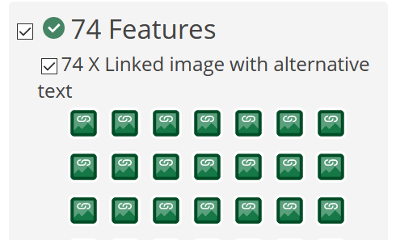
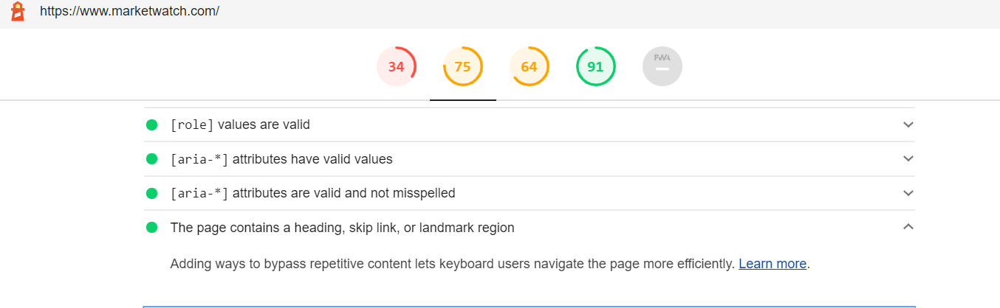
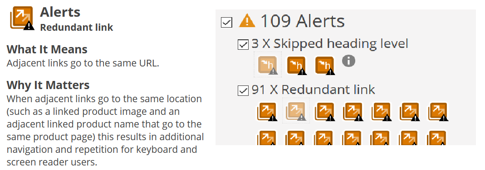
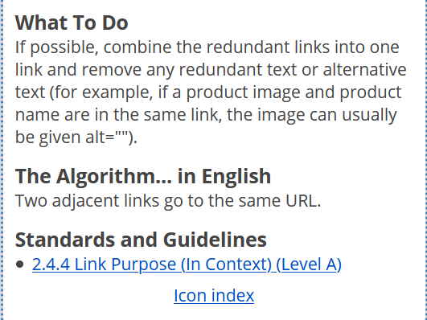

Evaluating Accessibility

- Basis of this site is a - Finance Website.
Marketwatch.com
Criteria Overview
- Evaluate chosen site for accessibility
marketwatch.com and look for relevant adherance or possible adjustments to meet
guidelines in present web development standards.
- Does website adhere to accessibility standards - based of Krugg readings
- Page Navigation
- Scanning
- Heirarchy
- Does the website apply further accessibility relating to Section 508
- Wave Report
- Lighthouse Report
- Collective overview And possiible improvments
1 Accessibility -Krugg readings
-- Positives --
- Page Navigation
- At first glance, following Top to Bottom and Left to Right, The fromt page
follows a top down approach. The main features are at the top
and flow downward.
- Scanning
- the main story is posted first and each subsequent story is followed
underneath by a bullet point and Each story is divided into a section
by panels
- Heirarchy
- There is a sense of heirarchy because as you scroll down the page each
section is depicted on the top left by a large header and a bar that
secitons
off and denotes where you are at. Also as mentioned above in scanning, each
story has a nice header and is followed by smaller stories with bullet
points.
-- Negatives --

- Size
- There are some issues with size on some fonts as I easily glanced over some
words even with letters bolded. Also Icons arnt well identitifed on what
they are supposed to do.
- Heirarchy
- It was this particular Section that felt a little too much. There was a lot
of data thown at me and even though there are dividers, they are small and
thing
so everything feels meshed together to find too much information when
looking over.
2: Best Practices in relation to Seciton 508
-- Positive --
- WAVE Report
-
74 Alternative text were found. This is very good to find especially to users who cannot see very well, or in
general are blind and use a screen talker, if there are no
alternative text set up for the images there can be a misrepresentaiton of an
article or the screen reader bogs the user with error message readings

- Lighthouse Accessbility Report
- The page heading, skip link, or landmark region which helps users without a mouse assisting navigation through a large website.

-- Negatives --
- Wave Report
- the WAVE report found 109 redundant links by which
inflates the options given to the user instead of narrowing down the list extending
the time
to search and creating a bit of waste

- Lighthouse Accessibility Report
- As mentioned in readings, the inability to zoom limits users who have sight issues making some pages no accessable to view or read.
Overview
- marketwatch.com follows a good number of accessibility guidelines, especially at first glance there is a nice structure of heirarchy and simple point and click. The overall structure of the website is good in that it accomplishes its task to serve media news related to the stock market. Tho there may be a few issues such as link redundancy and zooming disabled that can be fixed in the code.
-- Possible Fixes --
- Link redundancy
- Basically, I belive the website is also using a templet that has always set the text and image to the same link, which in the end can just be resolved by
just combining to one link

- Zooming
- when looking at the image below the lighthouse report for zooming, it shows that [user-scalabe="no"] resolve the issue by removing the portion and setting the scale = 5 as noted by
lighthouse to fix the problem.